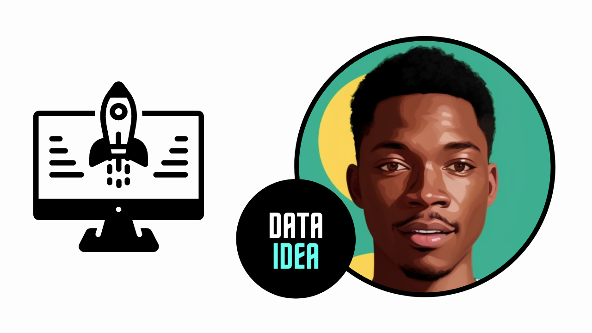

Exploring Options for Deploying Machine Learning Models

Deploying machine learning models is a crucial step in turning your data science projects into practical, real-world applications. With a variety of deployment options available, it’s essential to choose the one that best fits your needs. In this blog, we’ll explore the different deployment options and help you determine the best approach for your machine learning models.
Cloud-based Deployment
Cloud platforms provide scalable and flexible environments for deploying machine learning models, making them a popular choice. Here’s a look at some of the leading cloud services:
Amazon Web Services (AWS):
- SageMaker: A comprehensive service that offers tools to build, train, and deploy models at scale.
- Lambda: Ideal for deploying lightweight models that need to respond to API requests.
- EC2 Instances: Customizable virtual servers suitable for deploying larger, more complex models.
Google Cloud Platform (GCP):
- AI Platform: An integrated toolset designed for deploying and managing models efficiently.
- Cloud Functions: A serverless environment perfect for lightweight model deployments.
- Compute Engine: Scalable virtual machines for more extensive and customized deployments.
Microsoft Azure:
- Azure Machine Learning: An end-to-end platform for building, training, and deploying models.
- Azure Functions: Serverless compute service ideal for deploying lightweight models.
- Virtual Machines: Provide a custom deployment environment tailored to your needs.
On-premises Deployment
For organizations that require control over their infrastructure due to security, compliance, or performance needs, on-premises deployment is an excellent choice. Here are some options:
- Docker Containers: Ensures consistency across different environments by containerizing models.
- Kubernetes: Manages and orchestrates containerized applications, offering scaling and management capabilities.
- Dedicated Hardware: Utilizes specific hardware like GPUs or TPUs for high-performance requirements.
Edge Deployment
Edge deployment is perfect for real-time processing and reduced latency by deploying models on edge devices like IoT devices and mobile phones. Some popular solutions include:
- TensorFlow Lite: Deploys TensorFlow models on mobile and embedded devices.
- ONNX Runtime: Runs models trained in various frameworks on edge devices.
- NVIDIA Jetson: A platform for deploying AI models on edge devices with GPU acceleration.
Hybrid Deployment
Hybrid deployment combines multiple environments to leverage the advantages of each. For example, you might use the cloud for training and initial deployment but edge devices for inference to minimize latency and bandwidth usage.
Serverless Deployment
Serverless computing allows you to deploy models without managing the underlying infrastructure. This option is ideal for applications with variable traffic and includes services like:
- AWS Lambda
- Google Cloud Functions
- Azure Functions
These services automatically scale with the load, simplifying the deployment process.
API-based Deployment
Exposing your model as a web service via RESTful or GraphQL APIs is a flexible and widely used approach. This allows various applications and services to access your model via HTTP requests. Some popular frameworks include:
- Flask/Django: Web application frameworks for Python.
- FastAPI: A modern, high-performance web framework for building APIs with Python 3.7+.
- TensorFlow Serving: Serves TensorFlow models as APIs, streamlining deployment.
Batch Processing
When real-time inference isn’t necessary, batch processing is a great option for handling large volumes of data at scheduled intervals. Key tools include:
- Apache Spark: A unified analytics engine for large-scale data processing.
- Hadoop: A framework for distributed storage and processing of big data.
Key Considerations for Model Deployment
When deciding on a deployment option, keep these factors in mind:
- Scalability: Can the solution handle the expected load?
- Latency: Is real-time inference required?
- Cost: What are the costs associated with running the model in production?
- Security: Does the deployment meet your security and compliance requirements?
- Ease of Use: How straightforward is it to deploy, manage, and update the model?
- Integration: How well does the deployment option integrate with your existing systems and workflows?
Selecting the right deployment option is essential for balancing performance, cost, and operational complexity. By carefully considering your specific requirements and constraints, you can ensure a successful deployment of your machine learning models.
A few ads maybe displayed for income as resources are now offered freely. 🤝🤝🤝